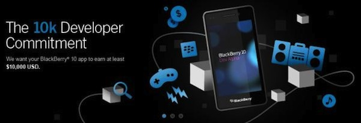

RIM akan berikan jaminan pendapatan 10 Ribu USD untuk Developer Aplikasi BlackBerry 10
Seiring dengan mendekatnya waktu peluncuran handphone BlackBerry 10, Research in Motion (RIM) pun melakukan berbagai cara untuk dapat menarik pelanggan. Salah satunya adalah menggenjot para developer untuk semakin gencar membuat aplikasi BlackBerry. Untuk itu, mereka pun memperkenalkan program terbarunya yang disebut 10k Developer Commitment.

Dalam program tersebut, RIM akan memberi jaminan bahwa developer akan memperoleh pendapatan minimal 10 ribu USD untuk aplikasi yang ada di BlackBerry App World. Terdapat beberapa syarat yang harus dipenuhi untuk developer yang ingin mengikuti program ini.
Dalam program ini, developer harus memperoleh pendapatan minimum sebesar 1000 USD dan tidak boleh lebih dari 10 ribu USD. Jadi, jika developer hanya memperoleh pendapatan sebesar 1000 USD, maka RIM akan memberikan 9 ribu USD sebagai bagian dari program ini. Untuk mengetahui program ini secara lengkap, Anda bisa klik link berikut.